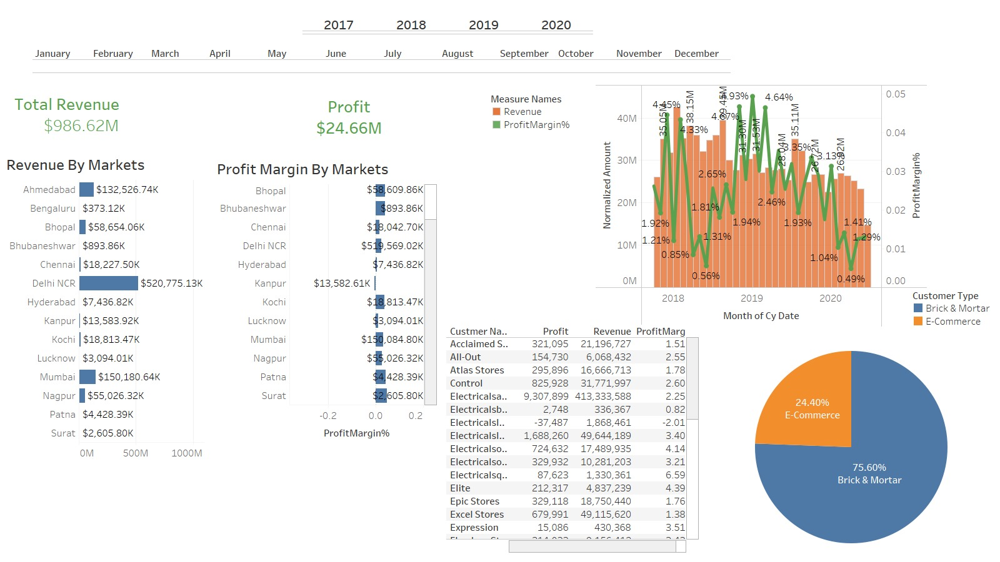
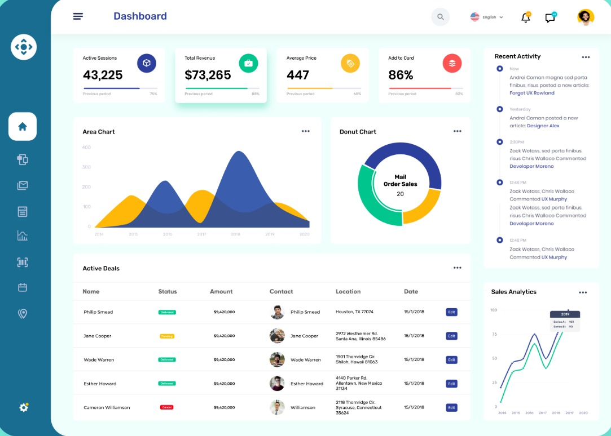

Revenue and Profit Margin by Market and Channel
- Displays total revenue and profit margins across regions and sales channels.
- Compares Brick & Mortar vs. E-Commerce performance.
- Identifies which regions and channels are most profitable.
- Tracks revenue and profit trends over time.
- Designed for sales, finance teams, and executives to optimize strategies.

Property Overview and Renovation Status Report
- Provides a clear summary of all properties under management.
- Includes features like waterfront access, room count, and current condition.
- Tracks renovation status and ongoing maintenance.
- Visualizes property age through a timeline graph.
- Essential for realtors and property managers managing portfolios.

Sales Performance and Activity Overview
- Summarizes sales metrics and user activity trends.
- Shows how sales fluctuate over time using area charts.
- Breaks down channel-based sales with donut charts.
- Tracks live deals with location, status, and value.
- Includes logs and analytics for deeper insight into operations.

Hotel Performance and Booking Insights Dashboard
- Tracks hotel KPIs like occupancy, revenue, and ADR.
- Breaks down performance by city, room type, and booking platform.
- Visualizes RevPAR and occupancy rate trends.
- Analyzes cancellations and booking patterns.
- Built for hotel managers and revenue optimization teams.
Learn more